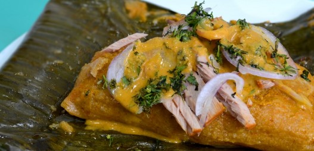
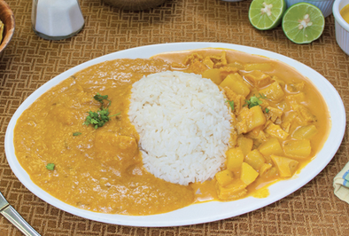
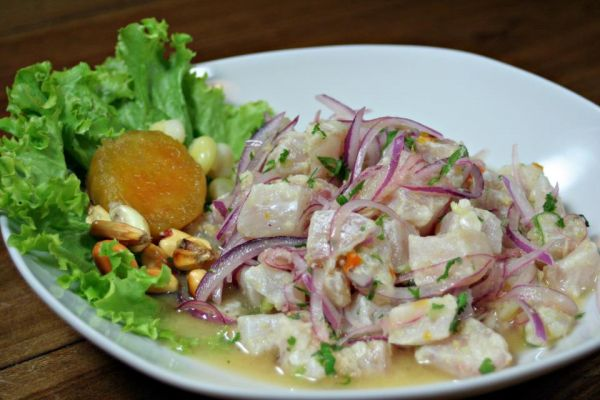

Calentar el aceite en una cacerola, en ella dorar las supremas de pollo de ambos lados, retirar y reservar
En el mismo aceite dorar la cebolla, colocar nuevamente el pollo y agregar el vino cocinando 5 minutos para evaporar el alcohol
Incorporar el agua caliente con el cubito de Caldo de Gallina Knorr® y cocinar todo junto 15 minutos a cacerola tapada y a fuego lento
Añadir la crema de leche y los champiñones cortados por la mitad o en cuartos. Terminar de cocinar hasta que el pollo éste tierno y la salsa reducida. Si fuera necesario espesar con almidón de maíz Maizena®. , Servir el pollo con la salsa.

Bollo de Pescado
Sofría las cebollas, el ajo y el pimiento en aceite o manteca de color hasta que estén transparentes.
Incorpore el tomate y sazone con sal, pimienta y comino
Remueva y deje cocer por 5 minutos
Divida en dos partes el refrito
En una sartén profunda coloque una parte del refrito con los filetes de pescado, que deben estar previamente sazonados con sal, pimienta y el jugo de los limones
Incorpore la mitad de la pasta de maní, deje cocer por un minuto y retire del fuego
En otra olla cocine los verdes rallados con el refrito restante
Incorpore el agua y el caldo del pescado, remueva constantemente y deje cocer hasta obtener una masa dorada, adicione la pasta de maní restante e integre la preparación hasta conseguir una mezcla homogénea que no se pegue
Retire la olla del fuego y arme los bollos añadiendo el cilantro
Lave las hojas de plátano, séquelas y extiéndalas sobre su mesa de trabajo
Distribuya la masa de verde y sobre esta el refrito del pescado, envuelva y lleve a una tamalera con agua hirviendo
Cocine por treinta minutos

Guatita
Blanquear el mondongo en agua hirviendo (sumergirlo por 1 minuto)
Retirar las impurezas raspando con un cuchillo
Frotar con limón, agregar la hierbabuena, harina y dejar macerar 30 minutos
Enjuagar varias veces y cocerlo en agua hirviendo con cebolla colorada, 2 dientes de ajo y pimiento durante 2 a 3 horas aproximadamente
Elaborar un refrito en aceite y achiote, picando la cebolla blanca y ajo
Al refrito agregar el mondongo cocido picado en cubos, el caldo de cocción del mondongo y el maní licuado; dejar cocer por unos minutos
Cocer las papas con cáscara, pelarlas y cortarlas e cubos medianos
Agregar las papas a la preparación y dejar hervir por unos minutos
Rectificar sal y agregar perejil picado

Ceviche de Pescado
Mezcla en un recipiente el pescado en cuadritos con el jugo de limón. Refrigera durante 1 hora a 2 horas para que el limón pueda “cocer” al pescado
Pasado el tiempo agrega el tomate picado, cebolla, cilantro, chile y sazona al gusto con sal de mar y pimienta negra
Mezcla bien y sirve con tostadas de maíz, aguacate al gusto, salsa picante o salsa estilo cocktail. Te alcanzan entre 2 a 3 tostadas de ceviche por persona (depende de que tanto les sirvas)